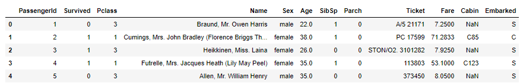
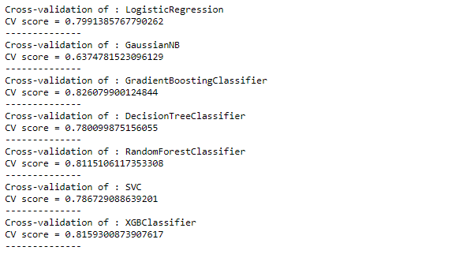
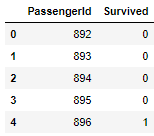

Kaggle Competition - Titanic: Machine Learning from Disaster
In this article we will see how to use machine learning to predict which passengers survived the Titanic shipwreck. You can see the code in further details on the link.
It is a Kaggle competition, where we can access to two similar datasets that include passenger information like name, age, gender, socio-economic class, etc. Based on the patterns found in the train.csv data, the goal is to predict whether the other 418 passengers on board (found in test.csv) survived.
We can also look at the dataset and try answer some questions about it, like:
- How many people survived in this accident?
- How many of them were male?
- Was the ticket class a significant factor in the passenger's survival?
First of all, we needed to import some libraries, like Pandas and Numpy, for data analysis and manipulation, and Scikit Learn, for the machine learning process. Then, we load the datasets and see the first rows of the train dataset.
In this dataset there are 891 rows and 12 columns, where the information about every columns can be seen below:
Data Visualization
1) How many people survived in this accident?
Analysing the train data set, using libraries for data visualization (Seaborn and Matplotlib), we can see that from the 891 passengers only 342 survived.
2) How many of the surviving passengers were male?
There was 577 men (with differents ages), but only 109 survived (19% of the total of men).3) Was the ticket class a significant factor in the passenger's survival?
We can also note that the Class of the trip is also a really predictable variable. The most of passengers of Pclass 1 survived, while less than one third of the Pclass 3 survived. We can also observe that there are a concentration of passengers by age according to the Pclass too, there was a concentration of young people mainly in the Pclass 3, for example, and a concentration of old people in Pclass 1. It’s notable that this idea of saving first woman, old people and children can be observed in the visualizations.

Data Preprocessing
Missing Values
As we noted earlier, in the dataset numeric and textual columns. Furthermore there are some columns with missing values. All those kind of data we need to prepare to be used in the end in a classifier making a prediction. The first step was the treatment of the missing values, inputting data.
We here are filling the NAN from the ‘Embarked’ column with most common value, the columns ‘Fare’ and ‘Age’ with the mean of the column, For the column Cabin, It was replaced the missing value for the word “Missing”. I noted that the first letter of this column represented the letter of the cabin, that represents the deck in which the cabin was located. So, I replaced the column with the first letter of each cabin.
Categorical Data
Now, we will deal with the textual categories. First the sex column, with values Male/Female were changed for 1 for Male and 0 for Female. And the others columns was obtained using the function get_dummies of the library pandas. It basically converts the categorical variable into dummy/indicator variables (0/1 columns for each option for the variable). The result we can see below:

Data Rescaling
The preprocessed data contains attributes with a mixtures of scales. Many machine learning methods expect or are more effective if the data attributes have the same scale. So, I used a MinMaxScaler() from the skelearn library, that use scaling method to solve this problem. So now in the numeric columns, the values range between 0 and 1. And I also removed some unnecessary columns, obtaining at the end the dataset below.
Classification
Now is the moment to create the model. Here we are testing some classifiers, using cross validation with 10 folds, using the train data like the input data and selecting the better one to be used in the final prediction.
Prediction
Now we gonna make our submission file, with the predict of the test data using our best classifier, in this case, the GradientBoosting, with its best params.
Results and Improvements
We observed the Titanic data and made some observations about the information of the passengers of this accident. It's interesting that the ship had more men passengers then women passengers, but the number of women that survived is more than the double of the number of men that survived. It is also interesting see how the class of the trip was also a determining factor to discover if a person died or not.
We created a machine learning model that predicts if a passenger survived or not to the Titanic. I submitted the submission file to Kaggles's competition and I obtained 0.7799 of accuracy. It was a good result for a first attempt.
For improvements it could be used other hyperparams in the classifiers, tested other classifiers, use some neural network, or make use of ensemble methods. What I did here was use another strategy, that is the use a Feature Selector method, the Exhaustive Features Selector of the library mlxtend, that basically will combine the variables searching for the better combination result for the classifier, increasing the number of features. At the end, it will return the best accuracy obtained and the best combination of features.
It takes a long time to run. I tried only to see the result of it with the maximum of 3 features. Then I made a new submission on Kaggle's competition and I obtained a score of 0.78229 and I moved up more than 1000 positions. It's really interesting how using the information of only 3 columns I obtained a better result then using 18, and probably if I had used more features using this Feature Selection algorithm, possibly I could obtain a better position in the competition.